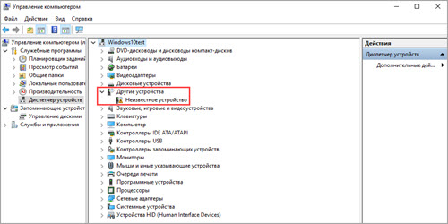

Как включить микрофон
В этом уроке я покажу, как включить и проверить микрофон на компьютере, ноутбуке. Мы научимся не только подключать его, но и настраивать в Windows, программах Google Chrome, Яндекс, Skype, Viber.
Инструкция для Windows
В системном трее кликните правой кнопкой мышки по значку аудио.
В контекстном меню выберите пункт «Записывающие устройства» или «Звуки».

Если устройство успешно определилось, на вкладке «Запись» будет активна иконка микрофона.

Скажите что-нибудь в микрофон: индикатор с правой стороны покажет уровень звука.
Надпись «Выключено, не подключено» означает, что устройство нужно активировать. Щелкните по нему правой кнопкой мышки, в контекстном меню выберите пункт «Включить».

Дополнительно в контекстном меню перейдите в «Свойства» и проверьте, чтобы переключатель был установлен в положение «Использовать это устройство (вкл.)».
Посмотрите, изменится ли статус на активный. Если нет, перейдите к следующему разделу.
Настройка
Настройка нужна в том случае, если микрофон не работает – включить его не получается.
На стационарном компьютере
1. Кликните правой кнопкой мыши по меню Пуск и выберите «Диспетчер устройств».
2. Раскройте ветку «Звуковые, игровые и видеоустройства».
Для корректной работы на иконках не должно быть восклицательных или вопросительных знаков.
3. Если в списке есть «Неизвестное устройство», скорее всего, драйвер не установлен или оборудование неисправно.
4. После успешной установки драйвера при подключении микрофона появится оповещение. В нём будет подсвечен вход. На запрос «Какое устройство вы хотите подключить» выберите «Микрофонный вход».
Для микрофонов USB:
- Находим инструкцию, которая прилагается к устройству, и читаем системные требования.
- Если инструкцию найти не удалось, осматриваем микрофон и находим информацию о производителе и модели.
- Переходим на официальный сайт, загружаем и читаем инструкцию. При необходимости скачиваем драйвера.
- Возвращаемся к шагу "Проверка" и проверяем работу устройства.
На ноутбуке
Так как в большинстве ноутбуков микрофон встроенный, проверьте, чтобы он был правильно установлен и готов к работе.
1. Кликните правой кнопкой мыши по Пуск, выберите «Диспетчер устройств». Раскройте ветку «Звуковые, игровые и видеоустройства».
2. В меню Пуск введите «Панель управления», и откройте приложение.

3. Найдите программу для управления аудио устройствами – ее можно определить по значку или названию.
4. В устройствах записи должна быть активирована «Встроенная система записи», а уровень звука не должен быть установлен на самый минимум.
5. Дополнительно в записывающих устройствах убедитесь, что выбрана и активна «Встроенная система микрофонов».
Как настроить звук
Способ 1: в приложении драйвера
1. В меню Пуск напечатайте «Панель управления» и запустите приложение.
2. Вверху слева (в части «Просмотр») выберите мелкие или крупные значки. Откройте приложение драйвера.
3. Нажмите на вкладку с микрофоном, и отрегулируйте уровень звука.
4. Щелкните по иконке микрофона для настройки усиления.
Способ 2: в настройках звука
1. В системном трее кликните правой кнопкой мышки по значку аудио.
2. В контекстном меню выберите пункт «Записывающие устройства» или «Звуки».
3. На вкладке «Запись» выберите микрофон и перейдите в «Свойства».
4. Перейдите на вкладку «Уровни» - здесь можно отрегулировать звук и усиление.

Также в эти настройки можно перейти через Панель управления: напечатать в Пуске панель управления, запустить приложение и открыть раздел «Звук».
Включение в программах
Google Chrome
По умолчанию браузер Google Chrome запрашивает разрешение для доступа к звукозаписи. Если по каким-то причинам доступ запрещен, его можно разблокировать в настройках.
1. Нажмите на значок «три точки», перейдите в «Настройки».
2. Щелкните по вкладке «Конфиденциальность и безопасность», откройте «Настройки сайтов».

3. В разделе «Разрешения» выберите пункт «Микрофон».
4. Удалите заблокированные сайты в части «Блокировать».
5. Перезагрузите браузер, и разрешите доступ.
Skype
1. В главном окне программы нажмите на значок «три точки», перейдите в «Настройки».
2. Кликните по разделу «Звук и видео». Произнесите проверочное слово: если все работает нормально, вы увидите индикацию звука.
Если индикатор звука не реагирует, попробуйте изменить устройство связи по умолчанию на «Microphone».
3. Нажмите на кнопку «Сделать бесплатный пробный звонок» для проверки работы звукозаписи.
4. Если услышите свой голос, значит, все настроено правильно. Если нет, вернитесь в начало урока и проверьте настройки.
Viber
- В главном окне приложения перейдите в «Настройки».
- Щелкните по пункту «Аудио и видео».
- Произнесите проверочное слово – при правильной настройке индикатор уровня должен отреагировать.
Если ничего не изменилось, проверьте, правильно ли выбрано устройство в настройках входа.
Если микрофон не работает
Все настройки верны, но микрофон не работает? Проверьте следующие пункты:
- Осмотрите устройство. Возможно, на нем есть кнопка активации и регулятор уровня звука. Проверьте, чтобы уровень был настроен на средние значения.
- Если вы используете ноутбук, на котором устройства включаются и отключаются через горячие клавиши, убедитесь, что вы не отключили встроенный модуль микрофона.
- Если вы заклеиваете веб камеру, убедитесь, что вместе с ней не было заклеено отверстие микрофона.
- При расположении отверстия звукозаписи на передней панели ноутбука, проверьте его на наличие пыли или другого мусора, который мешает работе.
- Осмотрите кабель подключения. Часто проблема заключается в штекере, в котором может пропадать контакт.